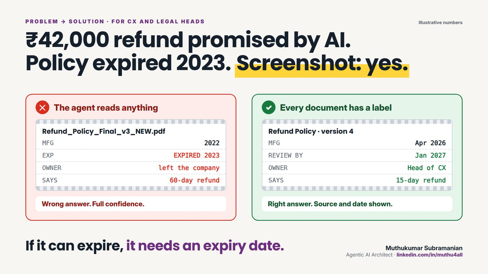

Your AI Agent Quoted a Policy That Expired in 2023. The Customer Has It in Writing.
By Muthukumar Subramanian · Agentic AI Architect

A customer asks your support agent about cancelling an annual plan.
The agent answers in two seconds, politely, with a clause number: "You're eligible for a full refund within 60 days."
That was true in 2022. The policy changed to 15 days in 2023. The old PDF is still sitting in a SharePoint folder called "Final_v3_NEW", and the agent found it first.
The customer takes a screenshot. Now you can either pay ₹42,000 or argue with your own company's AI in writing. (The story and the figures are illustrative.)
Medicine strips have expiry dates. So does the milk in your fridge. The documents your AI agent reads have none.
The problem: old documents never die
Every company has one of these: a shared drive from 2015, a SharePoint site nobody owns, three versions of the same policy and a wiki last edited by someone who left. For years, that was only a mild annoyance, because people knew which file to ignore. Ravi from accounts knew the 2021 price list was dead.
An agent doesn't know what Ravi knows. It reads what it's given, and it answers in the same confident voice whether the document is one day old or six years old.
Connecting your AI agent to a messy drive doesn't fix the mess. It gives the mess a confident voice and a direct line to your customers.
And it's your name on that answer. In Moffatt v Air Canada in 2024, a Canadian tribunal held the airline responsible for wrong refund information given by its website chatbot, and it rejected the idea that the bot was somehow separate from the airline. That's one small-claims-level decision in Canada, not Indian law, and that bot's mistake didn't come from an old file. But the principle travels well: customers don't care which document your agent read.
👉 [IMAGE: B-day08-2-in-article-document-label.png]
Caption: A label for every document your agent can read. No label, no access.
The solution: give every document an expiry date
You don't need a new platform to start. You need the discipline a pharmacy already has.
→ 1. A named owner. Every document gets one person who answers for it. No owner, and the agent can't read it.
→ 2. A review date. Refund policy: every 90 days. Price list: every 30. Brand guide: every year. When the date passes, the document drops out of what the agent may quote.
→ 3. Retire the old version properly. Archiving isn't enough if the agent can still find it. Take it out of the index the day the new one goes live.
→ 4. Answers with sources. Every answer shows the document, version and date. Customers can check, and your team can trace it.
→ 5. "I'm not sure" is a valid answer. If the only source is expired, or two sources conflict, the agent hands over to a person.
If it can expire, it needs an expiry date.
👉 [GIF: B-day08-4-in-article-expired-blocked.gif]
Caption: An old policy tries to reach the customer. The freshness check stops it, and the current one goes out with its source.
Who does this work?
This is where a new role is showing up. A context engineer decides what an agent is allowed to read, how fresh it must be, and what happens when sources conflict. The title is still settling, and at many companies it's a knowledge manager with a bigger job.
The other useful person is a forward deployed engineer (FDE): an engineer who sits with the customer's team and ships the agent on their real systems. An FDE will spend a week with your support team and find out which folder they really use, which is rarely the official one.
👉 [IMAGE: B-day08-3-in-article-freshness-check.png]
Caption: The freshness check. Four questions before an agent quotes any document.
The hard parts
→ Nobody wants to own old documents. It's thankless work. Put it in someone's goals, or it won't happen.
→ The dates don't exist yet. Thousands of files have no reliable date, and "last modified" often just means someone fixed a typo.
→ Some old documents still apply. A 2019 contract may be perfectly valid. Expiry rules must differ by document type, or you'll hide things you need.
→ Cutting access breaks answers at first. The agent will say "I don't know" more often, and people will complain. That's the system working.
→ Agents hold on to what they've read. Caches, indexes and agent memory can keep an old answer alive after the file is gone. Retiring a document has to reach those too.
The opportunity
→ For knowledge managers: your job just became strategic. You now decide what the company's agents believe.
→ For IT services firms: a fixed-price "agent-ready knowledge" clean-up: find the duplicates, name the owners, set the dates and retire the old versions.
→ For founders: freshness and ownership tools that sit over SharePoint and shared drives and flag the documents an agent shouldn't trust.
→ For legal and compliance teams: version history of what the agent read becomes your evidence when a customer disputes an answer.
Your turn 👇
When your agent can't find a fresh source, should it answer anyway or hand over to a person? Pick one.
Tag the person who still owns the folder called "Final_v3_NEW".